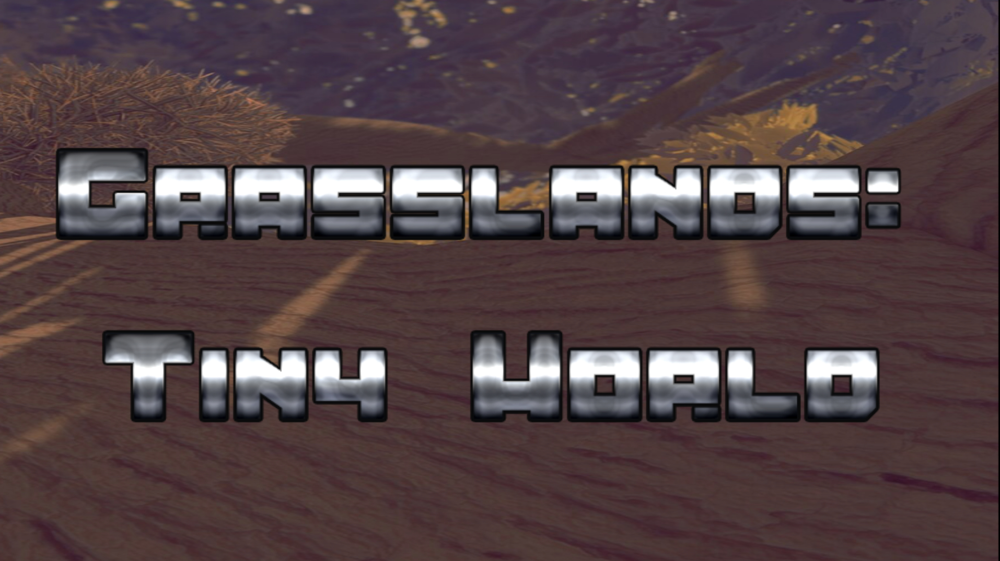

First Integration Into Media
This video was curated back in my sophmore year of highschool due to infatuation with content creation. Although imperfections are present within work, these are the products of limited knoledge blended with finding shortcuts for bthe ulmitate goal of creating content and putting it out. This project was the gateway for me getting into mediated content creation.

McLaren World Tour
This tour style poster was curated for a final project for a media class I took where I wanted to combine fandom with a collage of different moments from my favorite sports team. The image includes different aspects and moments from the team such as the drivers, leaders, and winning moments.

Grasslands:Tiny World
VR game made using the Unity software engine.